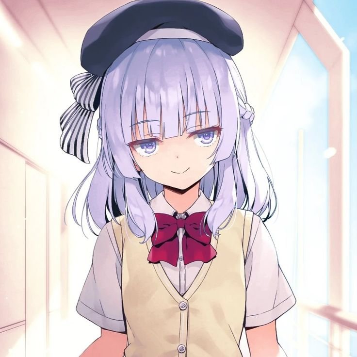

CD .. /ROOT
CLEARANCE_A

ID: SKYN_001
Arisu Sakayanagi
Class A Representative
INTERCEPTED_AUDIO_LOG
"Fufu... Tidak ada yang kebetulan di dunia ini. Aku sudah mengetahui segalanya tentang masa lalumu sejak awal, 'False Genius'."
Intellectual
Rank A
Physical
Rank E-
> A.N.H.S_DATABASE_V2.0 _